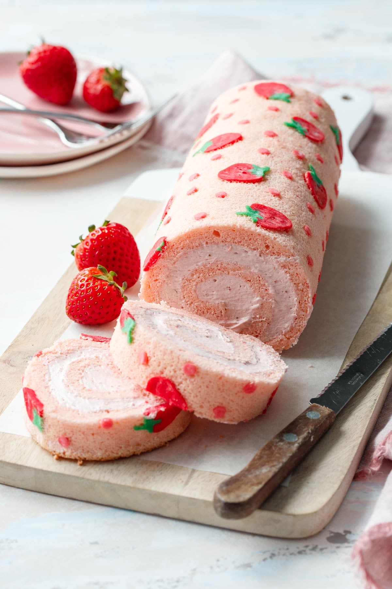
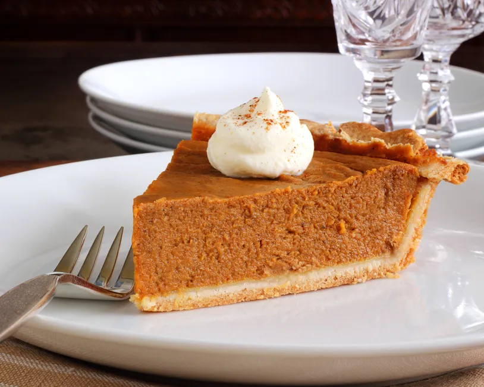

French Toast

Ingredients
- 6 thick slices of bread
- 2 eggs
- 2/3 cup of milk
- 1/4 teaspoon ground cinnamon
- 1 teaspoon of pure Vanilla
Steps
- Beat egg,vanilla and cinnamon in a shallow dish with a whisk.
- Dip bread in egg mixture, turning to coat both sides evenly.
- Cook bread slices on lightly greased nostick griddle or skillet on medium heat until browned on both sides.
Strawberry Roll Cake

Ingredients
- 2 tablespoons of unsalted butter
- 2 tablespoons of granulated sugar
- 1/3 cup flour
- 4 large eggs
- food coloring
- 1 tablespoon of vegtable oil
- 1 1/2 tablespoons of whole milk
- 1/2 tablespoon of kosher salt
- 1 cup of heavy whipping cream
- 1 ounce of freeze dried strawberries
- 1/4 teaspoon of unflavored powdered gelatin
Steps
- Preheat oven to 350 degrees F. Lightly butter or grease the bottom and sides of a 15 by 10-inch jelly roll pan; line with parchment paper.
- To make design paste, with a spatula or wooden spoon, mix butter and sugar together until you get a smooth paste. Add flour and mix until partially incorporated, then add egg white and mix until smooth. Paste should have a buttercream-like consistency.
- Divide paste into 3 bowls (how you divide it proportionally will depend on your design) and add food coloring as desired. (I mixed 20g paste with 1 drop leaf green; 60g paste with 1 drop deep pink and 1/2 drop red; and 40g paste mixed with 1 teaspoon of the pink paste to produce a lighter shade of pink for the dots).
- Transfer pastes into piping bags fitted with small round piping tips (I used my smallest #1 tip for the green, a #3 tip for the light pink dots, and a larger #5 tip for the berries).
- Pipe design onto parchment. Start with the green, then pipe the darker pink berries on top, and finish with the lighter pink dots. Place pan in freezer to allow the design to set while you prepare the rest of the batter.
- Place egg yolks in a mixing bowl. Add 1/4 cup sugar and whisk until sugar is dissolved and yolks are lightened in color. Drizzle in vegetable oil, whisking constantly, until incorporated. Whisk in milk, almond extract and salt. Add food coloring as desired (I mixed a bit of Deep Pink and Red with a toothpick, then added just a toothpick’s worth to the batter.)
- Sprinkle sifted cake flour over batter and fold until incorporated.
- Subscribe for full recipe!
Pumpkin Pie

Ingredients
- 1 can of pumpkin
- 1 can of sweetened condensed milk
- 2 large eggs
- 1 teaspoon of ground cinnamon
- 1/2 teaspoon of graound ginger
- 1/2 of ground nutmeg
- 1/2 teaspoon of salt
- 1 unbaked pie crust
Steps
- Preheat oven to 425 degrees F. Whisk pumpkin, sweetened condensed milk, eggs, spices and salt in medium bowl until smooth. Pour into crust. Bake 15 minutes.
- Reduce oven temperature to 350 degrees F and continue baking 35 to 40 minutes or until knife inserted 1 inch from crust comes out clean. Cool. Garnish as desired. Store leftovers covered in refrigerator.